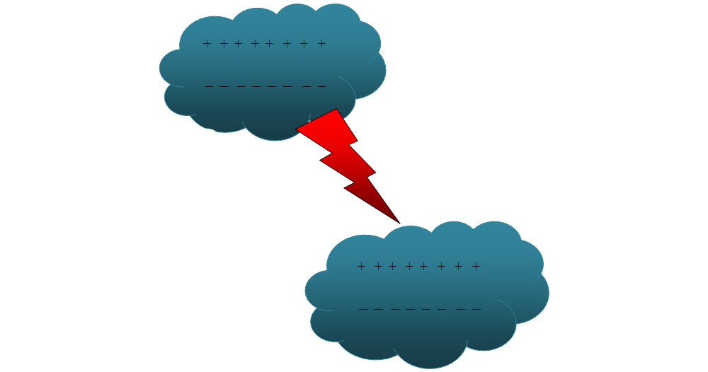
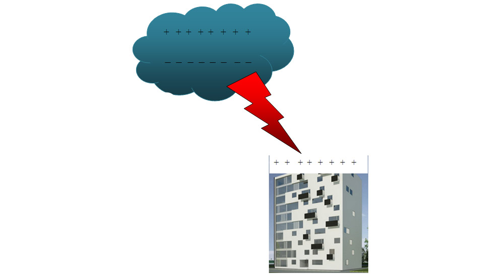
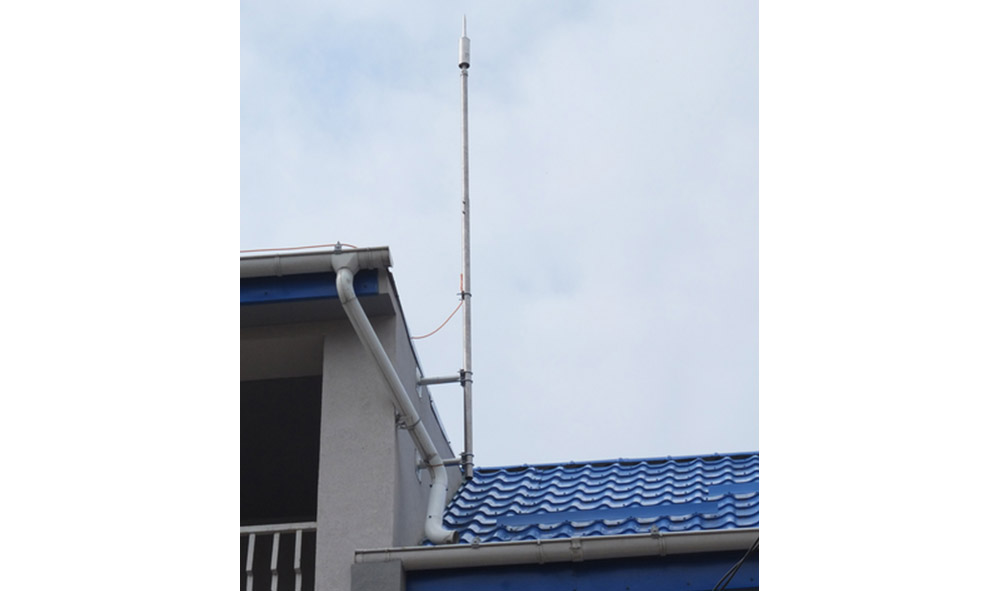

Ideea lecției
Unele corpuri pot căpăta proprietăți electrice. După electrizare, ele pot atrage obiecte foarte ușoare, cum ar fi bucățelele de hârtie.
Fenomenele electrice apar atât în experimente simple, cât și în natură, de exemplu în timpul unei furtuni.
1. Ce este electrizarea?
Un corp electrizat poate:
- să atragă bucățele mici de hârtie;
- să devieze un jet subțire de apă;
- să atragă sau să respingă un alt corp electrizat.
Observație
Când frecăm un pieptăn de plastic de păr, acesta poate atrage bucățele mici de hârtie. Spunem că pieptănul s-a electrizat.
Corpurile electrizate pot atrage corpuri mici și ușoare.
2. Moduri de electrizare
3. Sarcina electrică
Sarcina electrică descrie starea de electrizare a unui corp. Un corp poate fi încărcat pozitiv sau negativ.
corpul are mai puțini electroni decât în starea neutră
corpul are mai mulți electroni decât în starea neutră
4. Atracție și respingere
Corpurile electrizate pot exercita forțe unele asupra altora.
se resping
se atrag
5. Electroscopul
Electroscopul este un dispozitiv simplu folosit pentru a evidenția electrizarea unui corp.
El arată dacă un corp este electrizat, fără să determine exact valoarea sarcinii sale.
Cum funcționează electroscopul?
Experiment simplu
- Ia un balon sau un pieptăn din plastic.
- Freacă-l de păr, lână sau bumbac.
- Apropie-l de bucățele mici de hârtie.
- Observă dacă hârtia este atrasă.
6. Electrizări în natură
În norii de furtună, picăturile de apă și particulele de gheață se deplasează și se ciocnesc. În urma acestor interacțiuni, sarcinile electrice se pot separa și acumula în regiuni diferite ale norului.
Când diferența dintre regiunile electrizate devine foarte mare, aerul nu le mai poate izola și apare o descărcare electrică puternică.

Fulgerul
Lumina fulgerului se observă aproape imediat. Sunetul produs de încălzirea și dilatarea bruscă a aerului se numește tunet și ajunge la noi mai târziu.

Trăsnetul
Trăsnetul poate lovi clădiri, copaci, stâlpi sau alte obiecte înalte. De aceea, în timpul furtunii trebuie să alegem un adăpost sigur.

Paratrăsnetul
Paratrăsnetul este alcătuit dintr-o tijă metalică montată în partea superioară a clădirii și legată la pământ printr-un conductor metalic.
El oferă descărcării electrice o cale controlată spre pământ și contribuie la protejarea clădirii.

Reguli de siguranță în timpul furtunii
- Intră într-o clădire sau într-un autovehicul închis.
- Nu te adăposti sub un copac izolat.
- Îndepărtează-te de apă, garduri metalice și obiecte înalte.
- Nu rămâne pe un teren deschis sau pe un vârf de deal.
- În interior, evită folosirea aparatelor conectate prin cablu și nu sta lângă ferestre deschise.
Reține
- Electrizarea este procesul prin care un corp capătă proprietăți electrice.
- Electrizarea se poate face prin frecare, contact sau influență.
- Corpurile se pot încărca pozitiv sau negativ.
- Sarcinile de același fel se resping, iar cele de feluri diferite se atrag.
- Electroscopul evidențiază electrizarea unui corp.
- Fulgerul apare în interiorul unui nor sau între nori.
- Trăsnetul apare între nor și suprafața Pământului.
- Paratrăsnetul contribuie la protejarea clădirilor.
Verificare rapidă
Alege varianta corectă.